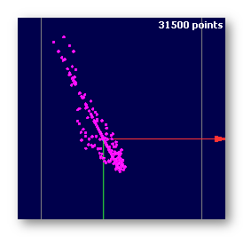
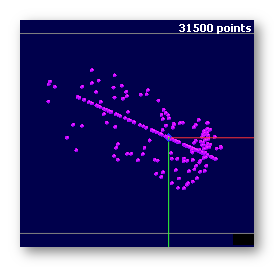
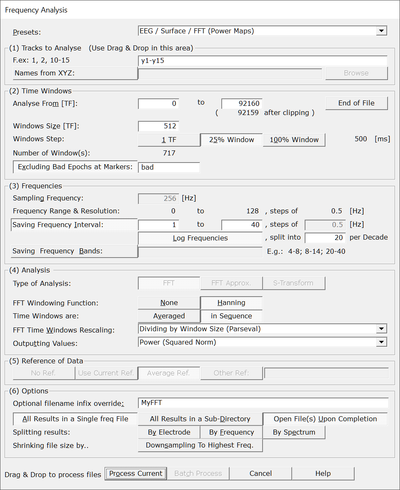
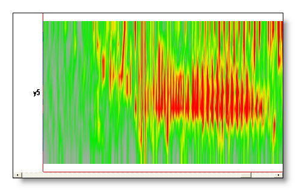

Frequency Analysis
This page presents the frequency analysis methods implemented in Cartool. You can also go the related Frequency Display page to see how to visualize the results.
Types of analysis
Power Maps definition
FFT Approximation
Frequency Analysis, from the Dialog
Frequency Analysis, from the Command-Line Interface (CLI)
CLI Options
Cases and Methods
Time Related Parameters
Frequencies Related Parameters
FFT Method
FFT Approximation Method
S-Transform (wavelet) Method
CLI Examples
Technical points:
Files that can be processed
Reference of data
Time reference for each window
Averaging windows
Windowing function
Time / frequency resolution issue
Averaging frequencies together
FFT Approximation and averaging
Averaging is done after conversion
Results
Types of analysis
FFT Approximation
Frequency Analysis, from the Command-Line Interface (CLI)
Cases and Methods
Time Related Parameters
Frequencies Related Parameters
FFT Method
FFT Approximation Method
S-Transform (wavelet) Method
CLI Examples
Reference of data
Time reference for each window
Averaging windows
Windowing function
Time / frequency resolution issue
Averaging frequencies together
FFT Approximation and averaging
Averaging is done after conversion
For users convenience, Cartool first splits into 3 major scenarios:
- Surface EEG
- Intra-Cranial EEG
- General case (any other case)
These scenarios then combine with the following methods:
- FFT
- FFT Approximation (Surface EEG only)
- S-Transform (wavelet)
Results can then be saved:
- Sequentially, to see the evolution of frequencies in time
- Averaged, under certain conditions, to get a global snapshot of frequencies
We therefor have (most of) these possible combinations:
|
Scenario |
Method |
Output |
||
|
Surface EEG |
X |
FFT |
X |
Sequential |
You can see the following article for more details:
"Intracerebral dipole source localization for FFT power maps", D. Lehman and C.M. Michel, Electroencephalography and clinical Neurophysiology, 1990, Elsevier
Power Maps definition
It is often referred to Power Maps in the dialog or in the documentation. This term actually refers to the combination of:
- Surface EEG
- Average Reference
- FFT analysis
FFT Approximation
The FFT Approximation (see article) is a very convenient way to retrieve an EEG-like signal, made of signed values, from the FFT results.
To begin with, the FFT, when applied to a time window, always returns results in the Complex space C. Each electrode, for each frequency, is a complex number made of two parts, the real and imaginary values. Hence, we can plot them on a plane (X is the real axis, Y is the imaginary axis), here for one time window, and three successive frequencies:

The FFT Approximation finds the best fitting line in the average referenced data (equivalent to the best fitting dipole), then projects the electrodes complex values on this axis. Being left with a single dimension, a line, we arbitrarily assign a polarity to one direction, and voilà, we have real, signed, scalar values . See again the same three frequencies, for one time window, with the resulting projected electrodes:

We repeat this operation for each time window, see here the first three time windows , for a single frequency (see the rotating pattern due to phase shift of the signal):

You may have noted that the final polarity is arbitrary, which should be accounted for in case of averaging. As long as patterns / topographies are concerns, this is not a real problem, though.
Frequency Analysis, from the Dialog
Call the dialog from Tools | Frequency Analysis menu, which is context sensitive:
-
Called from an EEG file, the analysis will apply only to this very current file.
-
In any other case, the dialog will operate in Batch mode, requiring you to later select some files.
The following dialog pops out. Fill the parameters which are relevant for you, then click either on Process Current or Batch Process (according to how the dialog was invoked):

|
The most used sets of parameters, which make use of either FFT's or of S-Transform. Presets can be found either for surface or intra-cranial recordings, for the Power Maps and FFT Approximation, and for all these cases, with variations using a STFT (more time resolution). There are also presets for the Wavelet S-Transform.
The most important parameters will be set, still some parameters have to be set manually! And, as usual, double check that all your settings make sense... |
|
|
Tracks to Analyse |
|
|
Tracks to analyse |
From an opened EEG:
In Batch Mode: You can of course modify this list. See important note about notation . |
|
Names from XYZ: |
Optionally pointing to a file with the electrodes coordinates and
names (such as .els and .xyz).
The names of the electrodes are taken from this file,
overriding the original names from the EEG (i.e. you can rename the electrodes). Constraints as in the link mechanism must be respected, such as same number of electrodes, same order, etc... |
|
Time Windows |
|
|
Analyse From [TF]: |
First time frame to be analysed, |
|
to |
and last time frame required for analysis. |
|
(... after clipping) |
For info, the last time frame to be actually analysed, with current parameters. This number might slightly differ from the previous field due to the subdivision in time windows. |
|
End of File |
Automatically set the last time frame to the actual end of the current file . Useful in Batch Mode, if the files have different lengths. |
|
Windows Size: |
For an FFT analysis, data is analyzed by blocks, aka time windows:
For the S-Transform, there is only one single big window which is the full time range to be analyzed. See this note about time frequency issues. |
|
Windows Step: |
How much stepping to do when fetching the next time window:
Note that a 1 TF step is equivalent to perform a Short Term Fourier Transform (STFT) . A 25% step (BTW used to be 75% overlap) is a safe way to add significantly new data to the time window. A 100% step is useful in case you have epochs pasted into a single file, and you shouldn't mix their data. So setting the window size to the epoch length, and stepping 100% is the way to go. |
|
windows step ... [ms] |
Showing the resulting step in [ms] between successive time windows. |
|
Number of Window(s): |
Showing the number of time windows you get with the current parameters. If the S-Transform analysis is used, there is only 1 window which extends exactly on the time range selected above. |
|
Excluding Bad Epochs at Markers: |
You can specify a bad epochs list of markers that will be ignored:
|
|
|
|
|
Sampling Frequency: |
The current sampling frequency, if available from the current file. If in Batch mode, however, this field can and should be filled by hand. |
|
Frequency Range and Resolution: |
The range of frequencies and the frequency step/resolution you can obtain with your current parameters (Sampling Frequency and Window Size). For example, if step is 0.5 Hz, frequencies actually available will be: 0, 0.5, 1, 1.5 etc... Hz. |
|
Specify a single interval of frequencies to be saved in the output file. Give the lowest and the highest frequencies of the interval, plus a step/resolution. The saved frequency steps can be bigger than the minimum available, f.ex. you can save by steps of 1 Hz even if the analysis offers you a 0.5 Hz resolution. In this case Cartool will average neighboring frequencies , therefore increasing the signal to noise ratio.
Remember that it is always a good idea to constrain the saved frequency range to be as small as possible according to your data. Otherwise you will have bigger and slower files, and for no use. |
|
|
Log Frequencies: |
Frequencies are inherently logarithmic by nature. For small ranges of frequencies, or to comply with usages, the whole interval of frequencies is often used. But for more accurate, or for broader ranges of frequencies, it is highly recommended to use a logarithmic scale instead. |
|
split into XX per Decade |
This tells how many subdivisions to save per decades (frequencies multipled by 10). F.ex. 20 values per decade means:
|
|
Saving Frequency Bands: |
Save any number of bands, computing the average for each of them. Give the list of bands, separated either by a space, a comma or semi-colon. Be careful to actually order the bands: Cartool will follow the exact sequence you specify, so keep things consistant by using increasing frequency bands! F.ex.: 0-4, 4-8, 8-12, 12-20 See this note about averaging frequencies. |
|
Type of Analysis |
You can choose between 3 well proven and robust analysis:
|
|
FFT |
The classical FFT, or the STFT (Short Term Fourier Transform) if the Windows Step parameter is set to 1 TF. With Average Reference data and saving the Square Norm, you can compute the Power Maps on surface recordings (see the Presets). |
|
FFT Approximation |
Projection on the least-square deviation line going through the FFT for each window (of the average-referenced data), aka best dipole fitting. Results are in the "real" values, and will look like an EEG with polarity (see the Presets). See this note about averaging FFT approximation. |
|
S-Transform |
The Stockwell Transform allows for some optimal time and frequency resolution. Note that it applies only to a single window, which can be as big as needed by your analysis. However to reduce the computational cost, and for big ranges, use rather the plain FFT and keep the S-Transform for shorter time ranges (like a magnifier on a given area). |
|
FFT Windowing Function: |
|
|
None |
No windowing function added (or, to be totally precise, using a Flat Top windowing function). |
|
Hanning |
Hanning windowing function. Try this to learn more. Also see this technical point. Recommended most of the time, except if you have no overlap between windows, or a a single time window. |
|
|
|
|
Averaged |
Analysed windows are averaged, hence the result will be a single "Time Point". See this note about the averaging. |
|
in Sequence |
Analysed windows are written sequentially, so you can have an idea of the frequencies in time. See this note about the time reference. |
|
FFT Time Windows Rescaling: |
The FFT formula includes specifies a normalization, or divisive factor. Problem is there is no agreement on which formula to use in practice. Here you can specify the one to your liking:
Note: this option is relevant only for single forward FFT's, and not for the S-Transform (which is a forward + backward FFT all in one!) |
|
Results of the analysis are always complex values. Usage is to save only the norm or power of these complex values, but you can still control what to actually save according to your needs:
|
|
|
Reference of Data |
|
|
No Reference |
Use the same reference as when the file(s) was(were) written, that is, no change in reference. |
|
Use Current Reference |
Use the reference currently in use. Useful only if the files have already been opened in Cartool, and the user has changed the reference. |
|
Average Reference |
Use the average reference, overriding current reference. |
|
Other Reference |
Use the average of the specified list of electrodes. If only one electrode is specified, this will be the reference. |
|
|
|
|
Optional filename infix override: |
The saved filenames will have the specified characters inserted. Default is a combination of the type of analysis and frequency range, which can be long and clumsy for your use. |
|
All Results in Single freq File |
This is the default ouput, a binary file holding all the results (frequencies, electrodes, and all time windows). Use this to save space on your disk, and / or to later use the Frequency Display of Cartool. |
|
All Results in a Sub-Directory |
Optionally saving all results in a sub-directory for a better organization. Kind of hand if you wish to split the data with the splitting options below. |
|
Open File(s) Upon Completion |
...of the analysis. Just be careful in Batch Mode , this could open a lot of files! (the original EEG files are opened one at a time, then closed when done). |
|
Splitting Results: |
Frequency analysis results are 3D data by nature: electrodes x time x frequencies. To facilate either the display, the export or the processing with other toolboxes, it comes in handy to split these data into smalller, 2D files.
Note: You can always break down .freq files , or merge 2D files back into .freq files later on. |
|
By Electrode |
Splitting results with one file per electrode. |
|
By Frequency |
Splitting results with one file per frequency. |
|
By Spectrum |
Splitting results with one file per spectrum. If you process sequentially the different time windows, there will be as many output files as there are of these time windows. If you average the time windows, a single file with the average spectrum is produced. |
|
Shrinking file size by.. Downsampling to Highest Freq. |
Especially useful for the S-Transform, the resulting files might very big and carrying way too much temporal information. F.ex. if the analyzed frequencies were in the range [5..50], you don't really care for time steps smaller than 20 [ms]. This option will optimally downsample the time resolution according to your parameters. Don't use it however if you wish to preserve a per time frame correspondance with your original data, though. |
|
Process Current |
Enabled when called from an EEG. The analysis applies only to this current file . This button remains disabled until all the parameter dialogs have received enough (and consistent) informations . If this is not the case, first check the current dialog: if its "Next" button is disabled, the problem is in the current dialog. Otherwise, browse the other dialogs for some missing informations. |
|
Batch Process |
Enabled when not called from an EEG. This will open a dialog for you to pick the set of files (even from different directories) to be analysed. This button remains disabled until all the parameter dialogs have received enough (and consistent) informations . If this is not the case, first check the current dialog: if its "Next" button is disabled, the problem is in the current dialog. Otherwise, browse the other dialogs for some missing informations. You can Drag & Drop files directly to run the Batch Process! |
|
Cancel |
Quit the dialog. |
|
Help |
Launch the Help to the right page (should be here...). |
Frequency Analysis, from the Command-Line Interface (CLI)
CLI Options
Cases and Methods
Time Related Parameters
Frequencies Related Parameters
FFT Method
FFT Approximation Method
S-Transform (wavelet) Method
CLI Examples
CLI Options
You can get the exact Frequency Analysis subcommand options with:
cartool64.exe frequency --help
Which gives:
Frequency Analysis command
Usage: Cartool64.exe frequency [OPTIONS] [files]
Positionals:
files FILES... List of files
Options:
--case ENUM:{eegsurface,eegintra,general}
Analysis case (Required)
--method ENUM:{fft,fftapprox,stransform}
Analysis method (Required)
--sequential Excludes: --average
Sequential output
--average Excludes: --sequential
Averaging blocks
--tracks TRACKS Tracks to analyze (Default:all)
--xyzfile FILE Using electrodes names from an Electrodes Coordinates file
--timemin INTEGER Starting from time frame (Default:0)
--timemax INTEGER Ending at time frame (Default:EOF)
--excludetriggers TEXT Excluding time intervals from a triggers / markers list
--samplingfrequency FLOAT Overriding Sampling Frequency
--windowsize INTEGER FFT Window Size, in [TF] (not for STransform)
--windowstep ENUM:{1tf,25%,100%}
FFT Window Step (not for STransform)
--freqmin FLOAT Lowest frequency to save (Required)
--freqmax FLOAT Highest frequency to save (Required)
--freqlinstep FLOAT Excludes: --freqbands --freqlogdecade
Saving frequencies as Linear Interval, with Frequency step
--freqlogdecade INTEGER Excludes: --freqbands --freqlinstep
Saving frequencies as Log Interval, with this amount per Decade
--freqbands INTERVALS... Excludes: --freqlogdecade --freqlinstep
Saving a list of Frequency Bands (f.ex. 1-4,4-8,8-14)
--hanning Hanning Windowing
--rescaling ENUM:{none,sqrt,parseval}
Window rescaling (Default:parseval)
--output ENUM:{real,norm,power,complex,phase}
Output type (Default:power)
--reference TRACKS Reference tracks Special values: 'none' (default), 'asinfile', 'average' or 'avgref'
--input-dir PATH:DIR Input directory
--output-dir PATH Output directory
--infix TEXT Infix inserted into the output file names
--subdir Saving all resuts into a sub-directory
--savefreq Saving .freq files
--splite Splitting results by electrodes
--splitf Splitting results by frequencies
--splits Splitting results by spectrum
--downsampling Optimally downsampling time for STransform
-h,--help This message
Cases and Methods parameters
To specify your analysis method, you use a combination of the --case and --method options that mimick the Presets of the dialog. Case is the general intent of your analysis, like surface or intra-cranial, while method relates to the analysis itself, like the FFT. Note that the case option can also affect how default parameters are set, too.
A simple example to compute the FFT of some surface eeg file would be:
cartool64.exe frequency --case=eegsurface --method=fft all-the-other-options -- files-to-process
Here is an exhaustive list of all possible combinations of cases and methods:
- --case=eegsurface
- --method=fft
- --method=fftapprox
- --method=stransform
- --case=eegintra
- --method=fft
- --method=stransform
- --case=general
- --method=fft
- --method=stransform
Time related parameters
Sequential vs Average
You have to specify
how the results of the analysis will be used / written to
file:
either a sequential series in time, or as a global average.
You do so
with either the --sequential
or the --average options.
F.ex. saving an average FFT would be:
cartool64.exe frequency --case=eegsurface --method=fft --average all-the-other-options -- files-to-process
Time Range of Analysis
You can specify the starting and ending time point of the analysis with the --timemin and --timemax options. If one of these is missing, it will be assumed to be either 0 or End Of File (EOF) respectively.
F.ex. saving an average FFT from range 1000 to 5000 time frames would be:
cartool64.exe frequency --case=eegsurface --method=fft --average --timemin=1000 --timemax=5000 all-the-other-options -- files-to-process
Excluding Bad Epochs
You can skip the analysis on blocks that overlap a given list of
triggers / markers, usually set around artefacts.
You
do so with the --excludetriggers
option and give a comma separated list of marker names:
cartool64.exe frequency --case=eegsurface --method=fft --average --timemin=1000 --timemax=5000 --excludetriggers=bad,art all-the-other-options -- files-to-process
How it affects the analysis results depends on your temporal saving parameters:
- For sequential output, results will zero'ed at the overlapping time periods
- For average output, overlapping blocks will be skipped from the averaging. You could then later check in the verbose file for the actual amount of accepted/rejected blocks...
Frequencies related parameters
Frequency Range of Analysis
You have to specify the frequency range
of your analysis.
You do so with the --freqmin and
--freqmax options:
cartool64.exe frequency --case=eegsurface --method=fft --freqmin=1 --freqmax=40 all-the-other-options -- files-to-process
Saving Linear interval, Logarithmic interval,
or Frequency
Bands
There are 3 ways to save the frequency results to file:
- Saving a single frequency interval, with linear steps
- Saving a single frequency interval, with log steps
- Saving the average of frequency bands
You use the --freqlinstep option to both indicate that you want to save a single frequency interval, and that the interval is linear with a given frequency step.
F.ex. to save all frequencies from 1 to 40, by steps of 1Hz you should use:
cartool64.exe frequency --case=eegsurface --method=fft --freqmin=1 --freqmax=40 --freqlinstep=1 all-the-other-options -- files-to-process
You use the --freqlogdecade option to both indicate that you want to save a single frequency interval, and that the interval is logarithmic with a given number of frequencies per decade (the number of steps from 1 to 10, 10 to 100, 100 to 1000 etc..).
F.ex. to save all frequencies from 1 to 40, with 20 frequencies per decade you should use:
cartool64.exe frequency --case=eegsurface --method=fft --freqmin=1 --freqmax=40 --freqlogdecade=20 all-the-other-options -- files-to-process
Finally, you use the --freqbands option to indicate that you want to save the average of specific frequency bands intervals. Each interval should be in the format "lowfreq-highfreq", and successive bands should be comma separated. Note that the order and any frequency overlaps is up to the user (you).
F.ex. to save the usual frequency bands 0.5 to 4, 4 to 8, 8 to 13 and 13 to 30, you should use:
cartool64.exe frequency --case=eegsurface --method=fft --freqmin=1 --freqmax=40 --freqbands=0.5-4,4-8,8-13,13-30 all-the-other-options -- files-to-process
Default Sampling Frequency
You can override the sampling frequency value for the analysis, if some files have an erroneous or missing one. It totally bypasses any existing sampling frequency for all the files on the command-line, though, so you it with caution!
You use the --samplingfrequency option to do so:
cartool64.exe frequency --case=eegsurface --method=fft --freqmin=1 --freqmax=40 --samplingfrequency=250 all-the-other-options -- files-to-process
FFT method
The core principle to the FFT is that the analysis is done on a block-by-block basis. A block, or time window, is specified by its size and the amount of overlap across successive blocks.
Window Size and Window Step
The Window Size is specified by the option --windowsize. It is good practice to be powers of 2, or powers of 10, although nothing, except for some loss of efficiency, forbids you to give any number of your liking. The rule of thumb for the window size is usually to multiply the sampling frequency by 2. F.ex. for a sampling frequency of 250Hz, a regular window size would be 500 time frames. This also produces a nice frequency resolution of 0.5Hz.
Once the Window Size is chosen, you can specify the step between successive blocks with the option --windowstep. Available settings are restricted to:
- 1 Time Frame, the parameter which corresponds to a Short Term FFT (stFFT)
- 25%, equivalent to 75% of overlap
- 100%, equivalent to no overlap
Here is a typical average FFT example:
cartool64.exe frequency --case=eegsurface --method=fft --average --freqmin=1 --freqmax=40 --windowsize=500 --windowstep=25% all-the-other-options -- files-to-process
Hanning Window
Without diving into the theory, it is highly recommended to apply a correction called the Hanning Window. What to retain is that it helps mitigate frequency smearing artifacts from the FFT.
You trigger the Hanning Window option with --hanning.
Completing the example above with the Hanning Window yelds:
cartool64.exe frequency --case=eegsurface --method=fft --average --freqmin=1 --freqmax=40 --windowsize=500 --windowstep=25% --hanning all-the-other-options -- files-to-process
Rescaling results
The FFT formula does not specify how to rescale a single forward FFT, without the back-transform. This leads to 3 possible choices:
- No rescaling at all
- Rescaling by Square Root of window size
- Rescaling by the window size, also known as Parseval rescaling (recommended, and the default)
Cases 1 and 2 have the undesirable side effect of the results absolute numbers being dependant on the window size. Case 3 on the other hand is the only option giving results insensitive to the window size, as it gives the correct absolute frequency values all the time. If you don't really care about absolute values (well, most of the case), then this parameter has no impact on the relative frequency results. Still, use Parseval option!
To set the appropriate rescaling factor, use the --rescaling option.
Completing the example above:
cartool64.exe frequency --case=eegsurface --method=fft --average --freqmin=1 --freqmax=40 --windowsize=500 --windowstep=25% --hanning --rescaling=parseval all-the-other-options -- files-to-process
Reference
Changing the reference can dramatically change the waveforms, and consequently the frequency analysis results.
You can specify any reference with the option --reference, but the standard practice is to use the Average Reference for Surface EEG analysis, aka Power Maps. Any other case has to be evaluate on a case-by-case basis, especially for intracranial electrodes, due to the specificities of the montage used.
Completing the example above:
cartool64.exe frequency --case=eegsurface --method=fft --average --freqmin=1 --freqmax=40 --windowsize=500 --windowstep=25% --hanning --rescaling=parseval --reference=average all-the-other-options -- files-to-process
Types of output
Finally, when you have set all the FFT parameters above, you specify what type of outputs you are interested in. The FFT analyis produces Complex values, equivalent to 2D vectors, which you can convert to either:
- Norm of complex number
- Power (square of norm) of complex number
- Complex value (no conversion per se), i.e. 2 values per time point
- Phase of the complex number, in [0..2Pi)
The default output is Power, but Norm would be totally legit, too. Saving the full complex values could be handy to compute some source localization. And saving the phase could be needed to compute some sorts of correlations.
Completing the example above:
cartool64.exe frequency --case=eegsurface --method=fft --average --freqmin=1 --freqmax=40 --windowsize=500 --windowstep=25% --hanning --rescaling=parseval --reference=average --output=power all-the-other-options -- files-to-process
FFT Approximation method
The FFT Approximation parameters are exactly the same as the ones from the regular FFT above.
The only restrictions are the case that should be Surface EEG, and the output type, which should always be real (would it be specified). The sequential flag is also recommended, though it would technically work to use the global average one:
cartool64.exe frequency --case=eegsurface --method=fftapprox --sequential --freqmin=1 --freqmax=40 --windowsize=500 --windowstep=25% --hanning --rescaling=parseval --reference=average --output=real all-the-other-options -- files-to-process
S-Transform (wavelet) method
The S-Transform, contrary to the FFT, is not designed on a block-by-block analysis. Instead, it runs on the whole selected time range once. And, yes, the S-Transform is not stricto sensu a wavelet, but for the sake of simplicity we still talk about wavelet, as it produces the same kind of results...
Consequently, the following options are irrelevant, and will trigger an error if used for the S-Transform:
- --windowsize
- --windowstep
- --rescaling
Hanning Window
The --hanning option still holds for the S-Transform, though its meaning slightly differs than for the FFT.
It will apply a half-hanning on the starting and ending points of the time interval. The size of the tapering window depends on the frequency.
Reference
Types of output
CLI Examples
Average Spectrum
Computing the average spectrum for surface EEG, with sampling frequency of 250Hz, from 1 Hz to 40Hz, by steps of 0.5Hz, on the whole time range while skipping bad epochs:
cartool64.exe frequency --case=eegsurface --method=fft --average --freqmin=1 --freqmax=40 --freqlinstep=0.5 --windowsize=500 --windowstep=25% --hanning --rescaling=parseval --reference=average --output=power --excludetriggers=bad --infix=MySpectrum --savefreq -- <eegfile1> <eegfile2> <eegfile3>
Same as previous, but saving log frequencies interval:
cartool64.exe frequency --case=eegsurface --method=fft --average --freqmin=1 --freqmax=40 --freqlogdecade=20 --windowsize=500 --windowstep=25% --hanning --rescaling=parseval --reference=average --output=power --excludetriggers=bad --infix=MySpectrum --savefreq -- <eegfile1> <eegfile2> <eegfile3>
Same as previous, but saving frequency bands:
cartool64.exe frequency --case=eegsurface --method=fft --average --freqbands=0.5-4,4-8,8-13,13-30 --windowsize=500 --windowstep=25% --hanning --rescaling=parseval --reference=average --output=power --excludetriggers=bad --infix=MySpectrum --savefreq -- <eegfile1> <eegfile2> <eegfile3>
Computing the average spectrum for intra-cranial EEG, with sampling frequency of 1000Hz, from 1 Hz to 40Hz, with log frequencies output. Note that you might have to set the reference according to your montage:
cartool64.exe frequency --case=eegintra --method=fft --average --freqmin=1 --freqmax=40 --freqlogdecade=20 --windowsize=2000 --windowstep=25% --hanning --rescaling=parseval --reference=none --output=power --excludetriggers=bad --infix=MySpectrum --savefreq -- <eegfile1> <eegfile2> <eegfile3>
Sequential FFT
Computing the sequence of spectrum for surface EEG, with sampling frequency of 250Hz, from 1 Hz to 40Hz, by steps of 0.5Hz, on the whole time range while skipping bad epochs:
cartool64.exe frequency --case=eegsurface --method=fft --sequential --freqmin=1 --freqmax=40 --freqlinstep=0.5 --windowsize=500 --windowstep=25% --hanning --rescaling=parseval --reference=average --output=power --excludetriggers=bad --infix=MyFFTs --savefreq -- <eegfile1> <eegfile2> <eegfile3>
Same as previous, but saving log frequencies interval:
cartool64.exe frequency --case=eegsurface --method=fft --sequential --freqmin=1 --freqmax=40 --freqlogdecade=20 --windowsize=500 --windowstep=25% --hanning --rescaling=parseval --reference=average --output=power --excludetriggers=bad --infix=MyFFTs --savefreq -- <eegfile1> <eegfile2> <eegfile3>
Same as previous, but saving frequency bands:
cartool64.exe frequency --case=eegsurface --method=fft --sequential --freqbands=0.5-4,4-8,8-13,13-30 --windowsize=500 --windowstep=25% --hanning --rescaling=parseval --reference=average --output=power --excludetriggers=bad --infix=MyFFTs --savefreq -- <eegfile1> <eegfile2> <eegfile3>
Computing the sequence of spectrum for intra-cranial EEG, with sampling frequency of 1000Hz, from 1 Hz to 40 Hz and time 1000 to 5000, with log frequencies output:
cartool64.exe frequency --case=eegintra --method=fft --sequential --timemin=1000 --timemax=5000 --freqmin=1 --freqmax=40 --freqlogdecade=20 --windowsize=2000 --windowstep=25% --hanning --rescaling=parseval --reference=none --output=power --excludetriggers=bad --infix=MyFFTs --savefreq -- <eegfile1> <eegfile2> <eegfile3>
Computing the FFT Approximation, from 1 Hz to 40 Hz, on all tracks & full time range:
cartool64.exe frequency --case=eegsurface --method=fftapprox --sequential --freqmin=1 --freqmax=40 --freqlogdecade=20 --windowsize=500 --windowstep=25% --hanning --rescaling=parseval --reference=average --output=real --excludetriggers=bad --infix=MyFFTApprox --savefreq -- <eegfile1> <eegfile2> <eegfile3>
Short-Term FFT
Computing the short-term FFT for surface EEG, with sampling frequency of 250Hz, from 1 Hz to 40Hz, by steps of 0.5Hz:
cartool64.exe frequency --case=eegsurface --method=fft --sequential --freqmin=1 --freqmax=40 --freqlinstep=0.5 --windowsize=500 --windowstep=1tf --hanning --rescaling=parseval --reference=average --output=power --excludetriggers=bad --infix=MystFFT --savefreq -- <eegfile1> <eegfile2> <eegfile3>
S-Transform
Computing the S-Transform for surface EEG, from 1 Hz to 40 Hz, by steps of 1Hz, on the whole time range while skipping bad epochs:
cartool64.exe frequency --case=eegsurface --method=stransform --freqmin=1 --freqmax=40 --freqlinstep=1 --hanning --reference=average --output=power --excludetriggers=bad --infix=MyST --savefreq -- <eegfile1> <eegfile2> <eegfile3>
Same as previous, but saving log frequencies interval:
cartool64.exe frequency --case=eegsurface --method=stransform --freqmin=1 --freqmax=40 --freqlogdecade=20 --hanning --reference=average --output=power --excludetriggers=bad --infix=MyST --savefreq -- <eegfile1> <eegfile2> <eegfile3>
Computing the S-Transform for intra-cranial EEG, for tracks y1, y2, y3, from 1 Hz to 40 Hz, with log frequencies output:
cartool64.exe frequency --case=eegintra --method=stransform --tracks=y1,y2,y3 --freqmin=1 --freqmax=40 --freqlogdecade=20 --hanning --reference=none --output=power --excludetriggers=bad --infix=MyST --savefreq -- <eegfile1> <eegfile2> <eegfile3>
Frequency analysis - Technical points
Files that can be processed
Reference of data
Time reference for each window
Averaging windows
Windowing function
Time / frequency resolution issue
Averaging frequencies together
FFT Approximation and averaging
Averaging is done after conversion
Files that can be processed
Input files can be anything that looks like tracks:
-
Any EEG files recognized by Cartool,
- Ris files (Results from Inverse Solution computation),
Reference of data
Be aware that changing the reference of the data
greatly
affects the shape of the signal
, and therefor its frequencies.
This is why the Power Maps and FFT Approximation
presets activate the average reference (as well as some other
parameters), to prevent any accidental change.
By the way, don't use these two methods for intra-cranial electrodes,
this does not make sense at all (again, see article)!
Time reference for each window
Each time window is a segment taken from the original file, spanning from time t to t + window_size - 1. After processing, the result represents frequency data for the entire window. Mathematically, it would be most accurate to assign the time reference to the center of the window, i.e., t + window_size / 2. However, for the sake of simplicity, we chose to use the starting time of each window instead.
For example, if the analysis begins at 9:15:00 and each window is 2 seconds long, the true average time of the first window is 9:15:01. This would introduce a 1-second shift in the timestamps. To avoid this shift and keep things straightforward, we instead label the output with the window's start time - beginning at 9:15:00.
Averaging windows
Average occurs at the very last stage of the processing. For example, after the Power Maps have been computed. This is not equivalent to the Power Maps of the mean FFT.
Windowing function
When using the Hanning windowing function, the results after analysis are multiplied by a factor 2 to account for the fading introduced by the method.
Time / frequency resolution issue
Smaller time windows gives a higher time resolution, but a lower frequency resolution. Conversely, bigger time windows gives a lower time resolution, and a higher frequency resolution. The dialog, by default, suggest a compromise between the time and frequency resolution, which the user can change.
Here you can see the same time range analysed with a small (64), a medium (256) and a large (1024) time window (for a sampling frequency of 256 Hz):

Averaging frequencies together
Frequencies saved and computed usually differ, in the sense that often, more frequencies are available from the transformation than there will be written to file . The most obvious case is when saving a frequency band, all frequencies within that band will be averaged together into a single result. Though, it also applies to the interval case, f.ex. if the saved frequencies are stepping by 1 Hz, and the transformation allows finer steps of 0.5 Hz.
To take benefit from that situation, Cartool will average as much as it can from the available frequencies to produce the requested output results. Let's see how this works.
In the frequency band case:
-
All frequencies within the specified range (including both limits),
with all the available steps (say, again, 0.5 Hz) will be averaged together.
-
But if the available steps are smaller than 0.25
Hz, f.ex. 0.125 Hz, the steps taken will be limited to those
multiples of 0.25 Hz. Stated otherwise, Cartool averages up to 0.25
Hz steps.
- In the S-Transform case, the number of frequencies averaged together has been limited to a total of 25 per band. Because the S-Transform is very smooth, and it does not provide much informations to average more, and because this transformation is very costly!
F.ex.: band 3-8 Hz, with steps of 0.5 Hz, will average frequencies 3, 3.5, 4, 4.5, 5, 5.5, 6, 6.5, 7, 7.5 and 8 Hz.
In the interval case:
-
You have to specify a range of frequencies, plus a step to save. If
your step is greater than the transformation available step, an
averaging will occur. F.ex. you ask from 3 to 8 Hz, by steps of 1 Hz,
but the resolution allows up to 0.25 Hz, then frequencies 3, 3.25,
3.5 and 3.75 are averaged together for your first saved frequency.
Then 4, 4.25, 4.5 and 4.75 for your second saved frequency etc...
Stated otherwise, they are treated like a serie of small bands.
-
As for the band case, averaged steps will be
limited to a minimum of 0.25 Hz.
- As for the band case, the number of frequencies averaged together for the S-Transform for each step is also limited to 25 (but this is quite unlikely to happen!).
In any case, you can see in the verbose file what are exactly the frequencies that have been averaged together , if you have any doubt.
FFT Approximation and averaging
FFT Approximation results can also be averaged, as explained here . However some more checkings are to be done.
The problems arise from the fact that the results are signed, real values, as an actual EEG would look like. However, during the FFT Approximation process, the polarity of each map has been assigned to an arbitrary value: a map can be either m or -m, we can not know. This is an important issue when averaging together these maps, as to avoid them to cancel each other for this sign reason.
Thus, Cartool, when dealing with averaging FFT Approximation maps, will perform sign inversions of the maps whose correlation with each others are negative . After the sign inversion the regular summation can take place.
Averaging is done after conversion
When averaging many frequencies together (either this case or this case), the averaging takes place after converting the results from complex to real values, usually by taking the norm, the squared norm of the results, or through the FFT Approximation.
Frequency Analysis - Results
-
.freq file with all the important informations, if this option has been selected (of course recommended!). Freq files are written in the same directories as their sources. Open them to work with the results.
-
.sef files for each split electrode, frequency or spectrum, if any of splitting options have been used.
-
.ApproxEeg.ep file(s), for the approximated EEG of each electrode, for each saved time window (if the "Spectrum" option above has been selected). Note that these files also have the frequencies on the horizontal axis , like the Spectrum.
-
Verbose file ...<type of analysis>.vrb (text), showing all the parameters.